library(tidyverse)
theme_set(theme_minimal())
library(learnB4SS)
library(HDInterval)
library(extraDistr)
library(brms)
data(emotion)
data(vowels)Overview
This vignette digs a bit deeper into priors for different types of outcome/response variables. We will cover outcome variables that follow these distributions: normal/Gaussian, log-normal, binomial/Bernoulli, poisson, and beta.
Normal/Gaussian
Let’s start off with an outcome variable distributed according to a normal/Gaussian distribution.
In fact, we hardly ever work with truly normally distributed variables. So for this example we will look at a data set of lexical emotional valence.
emotion
#> # A tibble: 1,000 x 2
#> word valence
#> <chr> <dbl>
#> 1 classroom 0.57
#> 2 worker 0.95
#> 3 climb 0.62
#> 4 photographer 1.71
#> 5 downward -1
#> 6 loose -0.480
#> 7 scanner 0.57
#> 8 kooky 1.42
#> 9 credence 0.79
#> 10 fog 0.770
#> # … with 990 more rowsThe emotion tibble contains a list of 1000 English words (word) and their emotional valence (valence). Emotional valence is given as a number between -4 and +4, which correspond to “bad valence” and “good valence” respectively.
The variable valence is in principle distributed according to a normal/Gaussian distribution (simply “normal” from now on). NOTE that the probability distribution of the outcome variable (aka likelihood, family) should not be chosen based on visual inspection, but based on conceptual principles.
Another word of warning is that plotting continuous outcome variables with geom_density() does not allow us to assess which distribution the variable follows, because the data might have been generated by a mixture of distributions.
A quick plot of the outcome variable should just be used to ensure that the data is ok (i.e. doesn’t contain errors).
emotion %>%
ggplot(aes(valence)) +
geom_density() +
geom_rug(alpha = 0.5)
All seems good.
Now, what we want to do is simply to model the distribution of valence.
valence follows a normal distribution:
\[valence_i \sim Normal(\mu, \sigma)\]
So in fact we want to estimate \(\mu\) and \(\sigma\) from the data.
We need to set a prior probability distribution (or simply prior) for \(\mu\) and one prior for \(\sigma\).
A go-to prior distribution for \(\mu\) is yet another normal distribution, with its own \(\mu_1\) and \(\sigma_1\).
\[\mu \sim Normal(\mu_1, \sigma_1)\]
As a general rule, we recommend using so-called regularising priors by setting \(\mu_1\) to 0.
\[\mu \sim Normal(0, \sigma_1)\]
To decide what value to assign to \(\sigma_1\), we can use the empirical rule: the 95% CrI of a normal distribution is the interval contained within the range defined by \(\mu \pm 2\sigma\).
Since valence ranges between -4 and +4 by definition, a conservative approach for \(\mu\) is to allow for values between -8 and +8.
Since \(\mu_1 = 0\), then \(\sigma_1\) is \(8/2 = 4\).
\[\mu \sim Normal(0, 4)\]
This is how \(Normal(0, 4)\) looks like.

So now we know which prior we will set for \(\mu\).
For \(\sigma\), one can choose from a normal distribution, a Student-t distribution, or a Half-Cauchy distribution.
We will go with the latter.
\[\sigma \sim HalfCauchy(x, \gamma)\]
With Half-Cauchy distributions you can safely set \(x = 0\).
\[\sigma \sim HalfCauchy(0, \gamma)\]
We cannot use the empirical rule to decide what value \(\gamma\) should have, because the rule works only with normal distributions.
Instead, we can use the inverseCDF() function from the HDInterval package (see the function documentation for a full explanation).
We don’t really have an idea of what the standard deviation for the valence scores might be, and we cannot calculate the standard deviation from the data (that would be cheating!).
So we just go with a quite weakly informative prior.
# phcauchy is from the extraDistr package
# If you are wondering why 0.025 and 0.975, that is the range that gives you
# a 95% CrI/HDI.
# Note that the phcauchy function calls gamma "sigma" but it means the same here.
inverseCDF(c(0.025, 0.975), phcauchy, sigma = 1)
#> [1] 0.03929027 25.45168269The functions returns the lower and upper boundary of the 95% HDI (Highest Density Interval). The range [0, 25] for the standard deviation encompasses a very large range of values, given the range of valence ([-4, +4]), making the prior a weakly informative one.
The prior for \(\sigma\) then is:
\[\sigma \sim HalfCauchy(0, 1)\]
To sum up:
\[ \begin{aligned} valence_i & \sim Normal(\mu, \sigma)\\ \mu & \sim Normal(0, 4)\\ \sigma & \sim HalfCauchy(0, 1) \end{aligned} \]
The corresponding code for \(valence_i \sim Normal(\mu, \sigma)\) is:
We can check which priors we should specify:
get_prior(
valence ~ 1,
data = emotion,
family = gaussian()
)
#> prior class coef group resp dpar nlpar bound source
#> student_t(3, 0.7, 2.5) Intercept default
#> student_t(3, 0, 2.5) sigma defaultThe brms code for setting the priors is:
priors_1 <- c(
# class Intercept = mu
prior(norma(0, 4), class = Intercept),
# no need to specify that cauchy should be half
# that is done automatically by brms
prior(cauchy(0, 1), class = sigma)
)At this point you would normally do prior predictive checks. We will show you how in the next example.
After you made sure the prior predictive checks are fine, you would go on to run the model with your priors (not run here).
Log-normal
Several measures that can only take on positive values, like segment duration, tend to have a skewed probability distribution. One such type of distribution is the log-normal distribution.
To illustrate how to run a Bayesian regression model with log-normal data, we will use a data set of vowel duration. Segment durations are known to follow a log-normal distribution, since durations can only be positive. This characteristics produces the typical right skew of log-normal data.
Let’s have a look at the data.
glimpse(vowels)
#> Rows: 886
#> Columns: 9
#> $ item <dbl> 20, 2, 11, 1, 15, 10, 13, 3, 14, 19, 4, 6, 16, 17, 5, 23…
#> $ speaker <chr> "it01", "it01", "it01", "it01", "it01", "it01", "it01", …
#> $ word <chr> "pugu", "pada", "poco", "pata", "boco", "podo", "boto", …
#> $ v1_duration <dbl> 95.23720, 138.96844, 126.93226, 127.49888, 132.33310, 12…
#> $ c2_voicing <chr> "voiced", "voiced", "voiceless", "voiceless", "voiceless…
#> $ vowel <chr> "u", "a", "o", "a", "o", "o", "o", "a", "o", "u", "a", "…
#> $ c2_place <chr> "velar", "coronal", "velar", "coronal", "velar", "corona…
#> $ speech_rate <dbl> 4.893206, 5.015636, 4.819541, 5.031662, 5.063435, 5.0632…
#> $ speech_rate_c <dbl> -0.55937531, -0.43694485, -0.63303978, -0.42091937, -0.3…And let’s plot the raw vowel duration.
vowels %>%
ggplot(aes(v1_duration)) +
geom_density() +
geom_rug()
We can start off with this simple formula:
\[vow\_dur_i \sim Lognormal(\mu_i, \sigma)\]
Vowel duration is distributed according to a log-normal distribution, which has a mean \(\mu\) and a standard deviation \(\sigma\). We want to estimate \(\mu\) and \(\sigma\) from the data.
This time though, we also have a few predictors we are interested in: C2 voicing (voiceless, voiced), C2 place of articulation (coronal, velar), vowel (/a/, /o/, /u/), and speech rate (syllables per second).
The predictors of a linear model are assumed to have an effect on \(\mu\). The following formula for \(\mu\) from above should make this evident:
\[ \begin{aligned} \mu_i & = \alpha + \beta_1 \times c2voicing_i + \beta_2 \times c2poa_i \\ & + \beta_3 \times vowelO_i + \beta_4 \times vowelU_i \\ & + \beta_5 \times srate_i \end{aligned} \]
\(\alpha\) is the parameter of the model intercept, while the \(\beta\) parameters are the coefficients of the predictors.
For each of these parameters we need to set a prior.
To be continued…